Win中安装VMWare
此处介绍，在Windows中，下载和安装Windows版本的VMWare，用于后续安装客户端macOS系统。
下载Windows版VMWare
打开VMWare主页：
https://www.vmware.com/go/getworkstation-win
下载：
https://download3.vmware.com/software/wkst/file/VMware-workstation-full-15.5.6-16341506.exe
得到：
- VMware-workstation-full-15.5.6-16341506.exe
- 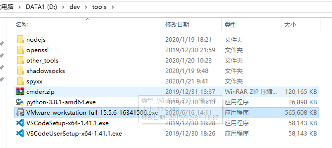
安装VMWare
双击去安装
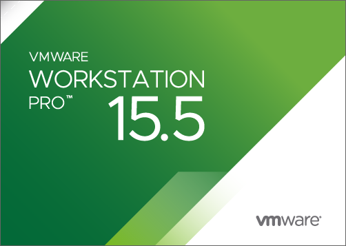
期间会弹框：
- 此安装产品要求您重新启动系统以完成Microsoft VC Redistributable安装，然后重新运行该安装程序
- 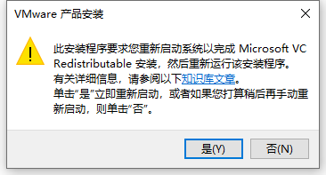
重启后继续安装：
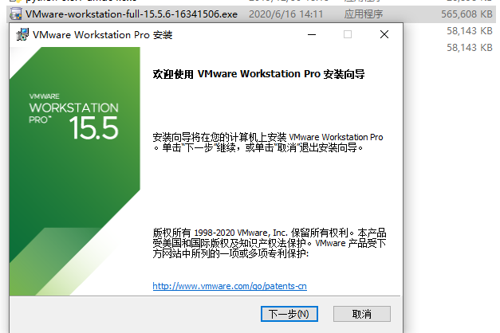
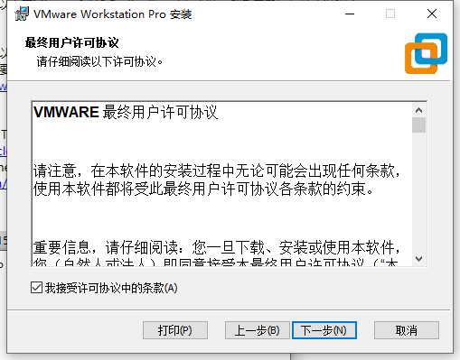
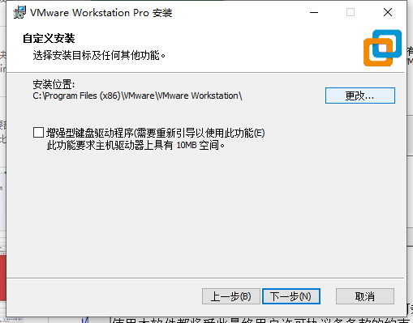
- 可选：自己此处去换到别的目录
D:\dev\DevInstallRoot\VMware\VMware Workstation\


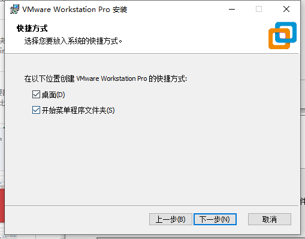
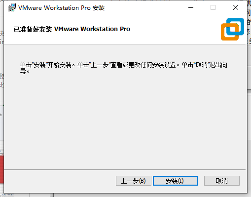
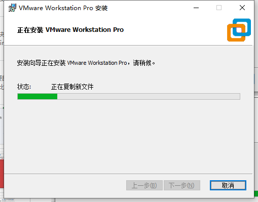
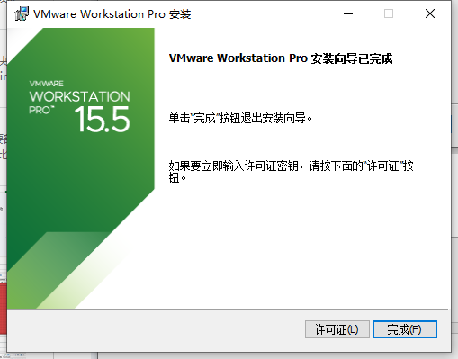
注册和激活
点击许可证
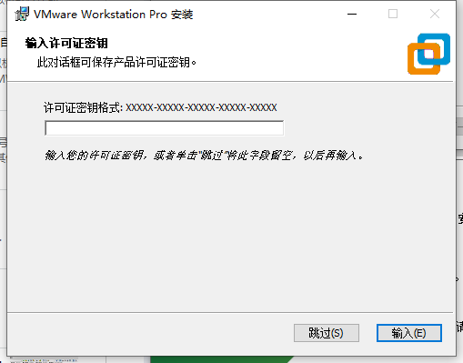
输入网上找的永久激活密钥：
YG5H2-ANZ0H-M8ERY-TXZZZ-YKRV8

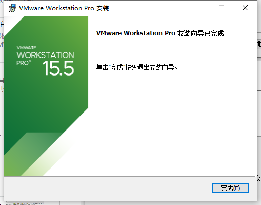
打开/启动/运行VMWare
然后从Win10的启动菜单中找到并点击：VMWare Workstation Pro
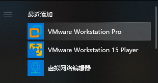
进入VMWare的主页面：
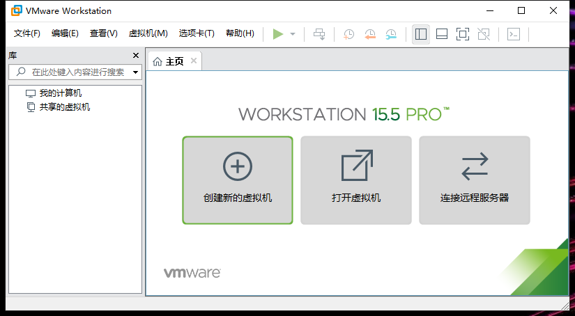
去看看版本号，确认和是否已注册：
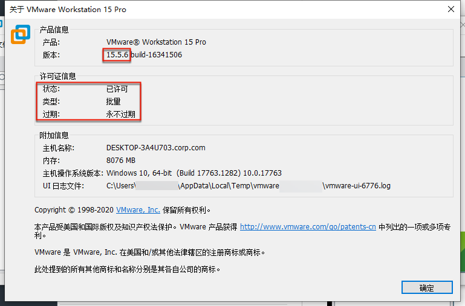
是我们希望的：
- 状态：已许可
- 类型：批量
- 过期：永不过期
关闭自动更新
为了防止更新导致破解失效，去关闭更新：
- 取消勾选：
启动时检查产品更新- 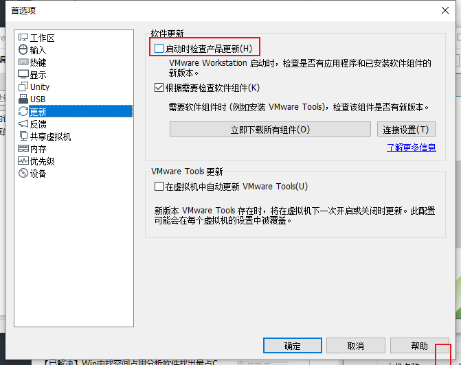